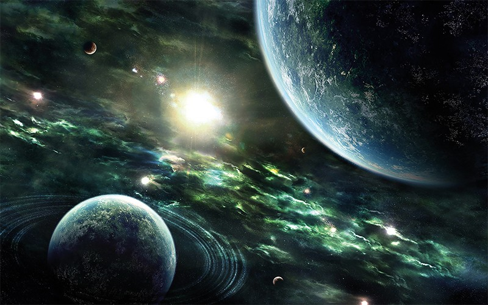

Existe vida em outros planetas?
16 de Agosto de 2024

Até o momento, não há evidências confirmadas de vida em outros planetas. No entanto, a possibilidade de vida extraterrestre é considerada plausível por muitos cientistas, principalmente devido à vastidão do universo e à diversidade de ambientes que podem existir em outros sistemas estelares.
O que são Alienígenas?
16 de Agosto de 2024
Alienígenas, ou extraterrestres, são formas de vida que se acredita existirem fora do planeta Terra. Essas entidades poderiam ser organismos simples, como bactérias, ou seres complexos e inteligentes, semelhantes ou diferentes dos humanos. A ideia de alienígenas surge tanto da ficção científica quanto de teorias científicas que consideram a vastidão do universo e a possibilidade de vida em outros planetas ou sistemas estelares. Até o momento, não há evidências concretas de que alienígenas existam, mas a busca por vida extraterrestre continua, principalmente por meio de programas de exploração espacial e estudos astronômicos.
O que são OVNS?
16 de Agosto de 2024
OVNIs, ou Objetos Voadores Não Identificados, são qualquer objeto ou fenômeno aéreo que é observado no céu e não pode ser imediatamente identificado ou explicado. O termo não necessariamente implica que o objeto seja de origem extraterrestre; ele simplesmente significa que o objeto ou fenômeno não foi identificado.
O que a NASA fala sobre?
16 de Agosto de 2024

“Minha resposta pessoal é sim”, diz administrador da Nasa sobre vida extraterrestre. Administrador da agência espacial dos Estados Unidos, a Nasa, Bill Nelson, disse que, pessoalmente, acredita na existência de vida extraterrestre.